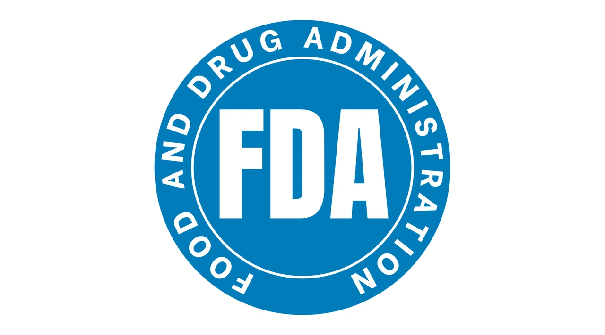

<!DOCTYPE html>
<html lang = "en"> 
<!--Name: Kendyl Evatt-->
<!-- Program Purpouse: This Program contains facts about the U.S. Food and Drug Code-->
<head>
    <body style="color:rgb(178, 221, 242); background-color:#000000; font-family: calibri;"></body>
<h1> Title 21, United States Food and Drug Code</h1>
<style>
    
    .navbar {
    display: flex;
    align-items: center;
    justify-content: space-between;
    background-color: #6423a2; 
    padding: 15px 20px;
  }
  .navbar a {
    color: rgb(28, 255, 126);
    text-decoration: none;
    padding: 10px 15px;
    font-weight: bold;
  }
  .navbar a:hover {
    background-color: #ff0077; 
    border-radius: 5px;
  }
</style>

</head>
<body>

<!-- Top Navigation Bar -->
<div class="navbar">
  <a href= "home.html">Home</a>
  <a href="sources.html">Sources</a>
  <a href="quiz.html">Quiz</a>
</div>
</body>
</html>
<body>
    <head>
    <h2>What is the United States Title 21 Food and Drug Code? </h2>
    <ul>
        <li>The U.S. Food and Drug Code serves the purpose of providing laws and regulations for safety including legal pharmaceuticals and illegal drugs. The code is a model for public health safety ensuring food and drugs are represented honestly to the consumer. This includes regulations on food offered by retail industries, grocery stores, farming, and drugs for over-the-counter or prescribed usage. </li>
    </ul>

    <head>
        <h2>Labeling</h2>
        <ul>
            <li>The Federal Food and Drug Cosmetic Act includes regulations relating to packaging and labeling requirements. The type size, net declaration quantity, supplement information, and fair packaging requirements must be included on food packages and labels on for-sale products. The very specific requirements on food labeling is used to ensure safety and give reliable information to the consumers before purchase or consumption. </li>
        </ul>
    </head>

    <head>
        <h2>Examination</h2>
        <ul>
            <li>General provisions in the Food and Drug code state that official department regulators are required to perform examinations and take samples to ensure product safety for human and animal consumption. Sample examinations are taken and recorded for proper maintenance and to ensure there are no health interferences. When issues occur with products they may issue a recall on the product which is when the FDA assumes a product is missinformative or unsafe for consumption and is removed from grocery stores and is off the market for sale.</li>
        </ul>
    </head>

    <head>
        <h2>Pharmaceuticals </h2>
        <ul>
            <li>The Food and Drug code requires specific handling of drugs and medications. There are specific guidelines in place for the manufacturing, distribution, design, and quality control of each pharmaceutical. This is to ensure the user has a clear understanding of the product and it’s strength, ingredients, and purity before using. The restrictions are also included in medical devices, over-the-counter, prescribed, and newly engineered drugs in the making. The FDA is responsible for enforcing these rules in the Title 21 US Food and Drug Code.</li>
        </ul>
    </head>

    <head>
        <h2>Food processing and safety</h2>
        <ul>
            <li>As consumers, we trust those who process and handle our food. The FDA has regulations to ensure that suppliers are careful with cross-contamination and prevent any health risks from agriculture, retail industries, food processors, farming, or any provider of food for consumption. There are specific regulations on meat, milk, eggs, nuts, caffeine levels, and more that have been put in place over the past decades. As for the meat industry, sellers must ensure that the meat for consumption is treated and the animals don't carry diseases or infections as this will harm and make humans sick. Milk must be treated at certain levels and stored properly from transportation to the grocery store shelves. As for caffeine, there are specific milligram requirements on energy drinks and other beverages to prevent harm and overuse of caffeine per drink. Some foods and drinks may be required to have labels that warn the consumers of health risks such as general surgeon warning for pregnant people, California Prop 65, and many other codes</li>
        </ul>
    </head>

    <head>
        <h2>
            Tobacco, Nicotine, and Alcohol Regulations</h2>
   <ul>
    <li>The FDA cannot fully ban the usage of tobacco or nicotine products, but they do enforce strict laws on controlling the products for safety. As for tobacco products, a full disclosure of ingredients is required on all packaging and labels of the product. The FDA states that nicotine and alcoholic products cannot be sold to those below the age of 21 and a valid ID is required for purchase. There must also be a warning symbol and general information that nicotine products can be addictive and are not recommended for good health. Nicotine products for sale must go through a marketing authorization to state they can be sold and meet all informative requirements but are not suggested for use. As for alcohol, each product must have effective labeling to show alcohol strength and warning labels of consumption for those with imposed health risks. 
    </li>
   </ul>
    </head>
    
</html>

